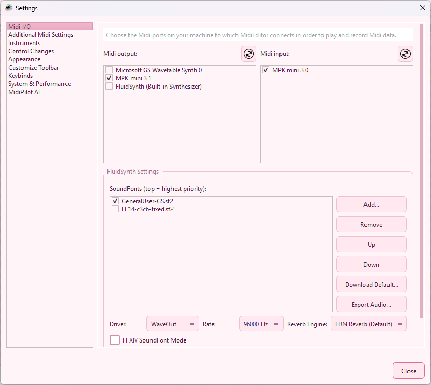
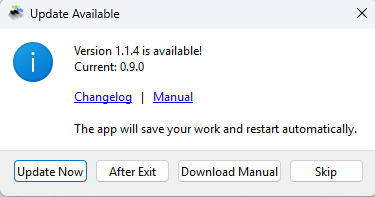
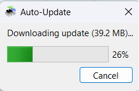
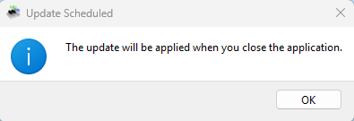

Setting up MidiEditor
Midi I/O
MidiEditor has to be correctly configured in order to be able to send data to a Midi device which is connected to the computer and (if required) to receive any data in order to allow recording. If not correctly configured, MidiEditor can be used to edit Midi files; however, you won't be able to listen to the music. MidiEditor AI includes a built-in FluidSynth SoundFont player - if you don't have an external MIDI device, the SoundFont output works out of the box.

To select the input or output device click "Settings.." in the MIDI menu in the menubar. In the list on the left-hand side of the upcoming dialog, please select the card "Midi I/O". This will show two lists which show all available input/output devices.
Select in-/and output from the lists and click "Close".
On startup, MidiEditor will always try to connect to the devices which have been used during the last session.
The same card also holds the FluidSynth Settings: the list of active SoundFonts with its Add..., Remove, Up / Down and Download Default... buttons, plus the audio driver, sample rate, reverb engine and gain. Download Default... offers a selection of ready-made SoundFonts - a general-purpose GM set among them - and installs them into the program's SoundFont folder. See SoundFonts & FluidSynth for what the individual settings do.
Making the Input Device audible
A lot of Midi devices which allow you to input Midi data are not audible but need a connected computer to generate sounds (similar to MidiEditor). When having chosen a valid output device, you can pass all notes played at the input device to the output device which makes the played notes audible. Select the option "Connect Midi In/Out" in the MIDI menu in the menubar or in the toolbar.
Starting Synthesizers along with MidiEditor
There are a lot of synthesizers MidiEditor can use to produce its sound with. However, some of those synthesizers have to be started each time you start MidiEditor, as they are not running by default.
To start a software each time when MidiEditor is started, you can set a start-command which is executed at each startup of the editor. To enter this command, click the menu entry "Settings..." in the MIDI menu in the menubar. Select the card "Additional Midi Settings" and enter your start command in the according field. The output of the started component will be visible (after the next startup) in the text area below this field.
Automatic Updates
MidiEditor AI checks for new versions on GitHub at each startup. When a newer version is available, you will see the Update Available dialog:

You have four options:
| Button | Action |
|---|---|
| Update Now | Downloads the update, saves your open file, replaces the application in-place, and restarts automatically. Your MIDI file will be reopened after restart. |
| After Exit | Downloads the update in the background. The update will be applied when you close the application. |
| Download Manual | Opens the GitHub release page in your browser for manual download. |
| Skip | Dismisses the notification. You will be reminded again at next startup. |
When you choose Update Now or After Exit, a progress dialog shows the download status:

If you chose After Exit, a confirmation message appears:

How it works: The updater renames the running EXE to .bak, extracts the new version from the downloaded ZIP, and launches the new EXE. Old .bak files are automatically cleaned up on the next startup. No external installer or batch file is needed.
To disable the automatic update check at startup, open the Settings dialog, go to
System & Performance and untick Check for updates at startup in the
Updates group. With the box unticked, MidiEditor AI does not contact GitHub at all.
Make sure your firewall allows MidiEditor AI to connect to api.github.com.
Platforms: ready-made downloads are Windows builds, and the in-place update described above is a Windows feature. On macOS the program is built from source; the update check there simply opens the releases page in your browser instead of replacing the application.
GPU acceleration
Edit → Settings → System & Performance has an Enable GPU acceleration for MIDI events switch. With it on, the piano roll and the velocity/controller lane are drawn through OpenGL instead of the CPU renderer. It is off by default; changes apply after a restart.
- The page tells you what is actually running. The line under the switch reads Active now: OpenGL (GPU acceleration) or Active now: software rendering, and if the two disagree with the checkbox it says why - for example that GPU acceleration is ignored on a display with UI scaling (125 %, 150 %) unless Ignore system UI scaling is enabled on the same page, or that the change waits for a restart.
- Software anti-aliasing and smooth pixmap transforms shape the note grid in both renderers, so they stay available with GPU acceleration on. MSAA, VSync and hardware smooth transforms only matter for the OpenGL renderer. Anti-aliasing, smooth pixmap transforms and hardware smooth transforms take effect the moment you change them, however the settings dialog is closed afterwards; MSAA and VSync apply on the next start.
- Editing is identical in both modes - every tool, shortcut, context menu and tooltip works the same way; only the drawing path differs.
Portable Mode
In Portable Mode MidiEditor AI keeps its configuration inside its own folder instead of the system's settings store. The complete installation - program, SoundFonts, logs, custom prompts and your configuration - then travels as one folder: copy it to a USB stick, run it on another machine, and it looks and behaves exactly like the one you left.
There are two ways to switch it on, and they do the same thing:
- Put an empty file named
portable.txtnext toMidiEditorAI.exe. - Or start the program with the
--portablecommand-line switch.
With either marker in place, all settings are written to a config folder beside the
executable (config/MidiEditor/NONE.ini) instead of the Windows registry.
- Your existing settings come along. On the first portable start the configuration is copied over once from the normal location, so the portable copy opens with the providers, themes, keybindings and layout you already had.
- Nothing is removed. The original settings stay where they were. Delete
portable.txt(or drop the switch) and the program is back on the normal configuration, exactly as you left it. - The folder carries everything. SoundFonts, logs and custom prompt files already live
next to the program - see Where MidiEditor AI keeps its files - and the
configfolder adds the last missing piece. - Without the marker nothing changes. A regular installation keeps using the system's
settings store and never reads or writes
config. - Restarts stay portable. When the program restarts itself - after a theme change or an update - it stays in Portable Mode even if you only used the command-line switch.
Where MidiEditor AI keeps its files
Settings and data files are two different things and they are stored in two different places. Data files - the log files, the SoundFont folder and your custom system prompts - live in the program's data folder:
| Situation | Data folder |
|---|---|
| Windows | The folder the program is in, next to MidiEditorAI.exe. |
| macOS / Linux | The per-user application data folder, created on first start. |
| Portable Mode (any platform) | The folder the program is in - that is what portable means. |
What you will find there:
| File or folder | Contents |
|---|---|
soundfonts/ | The bundled SoundFonts and everything you add or download - see SoundFonts & FluidSynth. |
midieditor_ai.log | The program log, rotated in the background - see Logging. If the folder cannot be written to (for example a read-only installation directory), the log falls back to your local application data folder. |
midipilot_api.log | The AI request log written by MidiPilot. |
system_prompts.json | Your customized system prompts. |
Settings - providers, themes, keybindings, window layout and every checkbox in the
Settings dialog - are stored in the system's own settings store (on Windows: the registry), or,
in Portable Mode, in config/MidiEditor/NONE.ini next to the
executable.
Support for older Midi Devices
Some old Midi devices may not support the full Midi instruction set. Hence, these devices may not stop the currently played notes when you click the stop button. MidiEditor provides a solution for this, which can be activated in the "Additional Midi Settings" card in the settings dialog. In order to activate it, check the checkbox "Manually stop notes". This should not be used when your Midi device does stop the playback whenever requested.